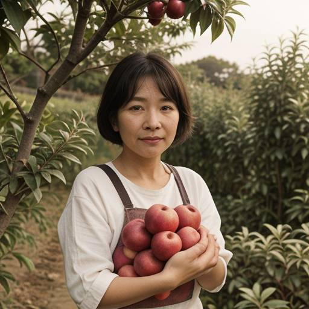

北投鍾家
北投「高山蜜蘋果」鮮少人知，鍾家阿姐利用北投高山地區日夜溫差大的氣候特質，讓蘋果甜度增加，是既甜又多汁的品種，而且皮薄、肉質細緻。

張美阿姨
呵護加上南投清新的氣候和豐富的土壤，造就了皮薄多汁、果肉香甜中帶有橘子特有的微酸，襯托出不同層次的口感與風味！
北投「高山蜜蘋果」鮮少人知，鍾家阿姐利用北投高山地區日夜溫差大的氣候特質，讓蘋果甜度增加，是既甜又多汁的品種，而且皮薄、肉質細緻。
呵護加上南投清新的氣候和豐富的土壤，造就了皮薄多汁、果肉香甜中帶有橘子特有的微酸，襯托出不同層次的口感與風味！